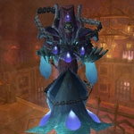
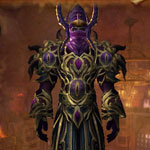

You can find the Scholomance dungeon within Western Plaguelands, Eastern Kingdoms.
The coordinates are (69.6,73.3)

Route:
Map 1Map 2Map 3


Bosses:
1. Instructor Chillheart2. Jandice Barov3. Rattlegore4. Lilian Voss5. Darkmaster Gandling

Quick Boss Tactics:/i Inflicts frost damage to players. Move away from Ice Wall, kill boss before you run out of room. When boss dies kill the phylactery & avoid standing under the floating books.
Heroic Differences: Wrack Soul inflicts shadow damage to a player, jumps to others.
Quick Boss Tactics:
/i Move from arcane cone Wondrous Rapidity. At 33% & 66% boss will hide behind an illusion, kill them.
/i Move from arcane cone Wondrous Rapidity. At 33% & 66% boss will hide behind an illusion, kill them.
Heroic Differences: Gravity Flux inflicts shadow damage to all that enter & knocks back, avoid this. Killing the wrong illusions inflicts arcane damage to party.
Quick Boss Tactics:
/i Pick up Bone Armor (click the piles of bones on floor), these absorb one Bone Spike, helps the healer out. Avoid blue flame patches. Tank will be hit with Rusting, this stacks.
/i Pick up Bone Armor (click the piles of bones on floor), these absorb one Bone Spike, helps the healer out. Avoid blue flame patches. Tank will be hit with Rusting, this stacks.
Quick Boss Tactics:
/i Pulled in with Death’s Grasp, move back out & run the pink fire patches around outside of room. Run away from boss if you get Fixate Anger.
/i Pulled in with Death’s Grasp, move back out & run the pink fire patches around outside of room. Run away from boss if you get Fixate Anger.

Quick Boss Tactics:/i Inflicts fire damage to players. He summons adds but keep attacking boss. Watch for Harsh Lesson a random player will be teleported to a study room, kill mobs & make your way back.